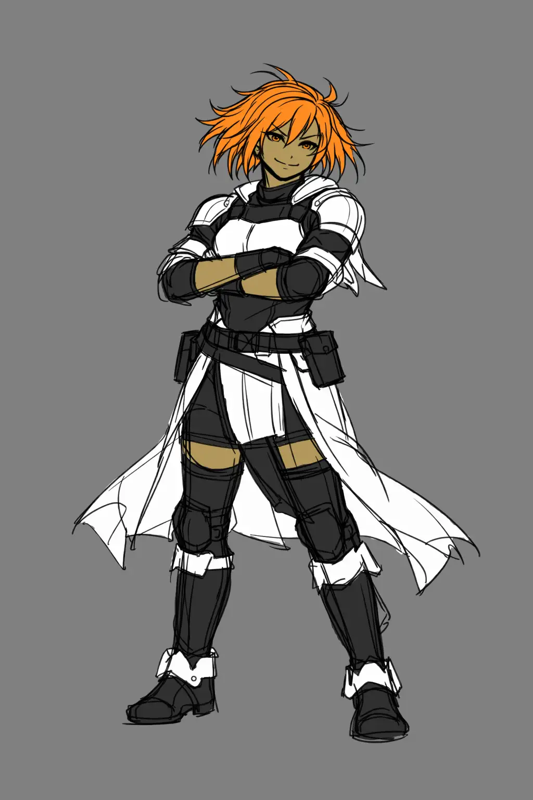

Breaking the NPCs
While playing DnD and other TTRPG as well as different video games, my mind came to an idea. What if we tried introducing the break system to the DnD. You may wonder - "Exi. What is a break system?". The break system is a system designed to avoid players from using all their strongest abilities to just annihilate the boss within first turn of combat. My reedition of it replaces legendary actions and reactions with one unified system called Legendary Break Points and it is meant to be used against creatures meant to pose a special threat to the players, such as bosses or powerful adversaries that should put fear in the players' hearts.

Introduction and Inspirations
Many people have approached this topic before, yet none has hit the mark for me. Most just made this as a substitute of Legendary Resistances, with a punishment for players if they do not deplete it in time, which just didn't sit right with me. For me the closest was a remake made by a youtuber AHero with his "Why Your DnD Monsters Suck - Defense", wasn't working for me, so I just waited and one day when playing Guild Wars 2 and Arknights Endfield I had an epiphany and I've made this.
Mechanic itself
First we scrap the Legendary Actions and Resistances and replace them with one pool of points that should be between 8 and 16 regaining between 2 and 4 points at the start of each of the creatures turns. This makes sure that the preassure is constant, but it also gives the players breathing room, as if the creature wants to perform a legendary action they also expend this resource.
Then we need to give the creature some powerful ability, that can change the tide of the battle. It will be powerful, but with a catch using ability will reduce the creature's Legendary Break Points to a low value (1-3). Now you have an additional decision: do you unleash a poweful attack and become exposed and give initiative to the players, or you hoard the points, while the players slowly chip at your creatures slowly suffocating you.
Many remakes of this mechanic also lacked scaling and the monster would be punished the same if they wanted to save from a 2nd or a 9th level spell, so I also have something for that. Depending on different circumstances the creature must expend different amounts of the Legendary Break Points, in order to negate the effects:
| Effect/Spell Level | Amount of Break Points needed to remove (multi targer) | Amount of Break Points needed to remove (single targer) |
|---|---|---|
| 1-3 and nonmagica | 1 | 2 |
| 4-5 | 2 | 3 |
| 6-7 | 3 | 4 |
| 8 | 4 | 5 |
| 9 | 5 | 6 |
Results after playtesting
I have been playtesting this mechanic for about 2-3 years now and while I had some initial pushback, especially from caster players, generally most players have gotten used to this and from the perspective of the forever GM, the bossfights became much more dynamic and provide more challange even without spamming 5 trilion minions.
The main point of difference in regards to other remakes of the Legedary Resistance/Actions system is combining both of them into one and drilling the trade of between security and initiative in combat. This gives much more opportunities for a GM to portray the behaviour of the NPCs in combat and it also nullifies slightly the caster/martial divide at medium levels.
Example
Here below I provide an example of one of my uses of this mechanic in one of my recent games.
An Earl in the Congression of Eastern Bog, a powerful alliance in a harsh world. Recently he has taken over the Earl title at a very young age after his father - the former earl, and all his guardians have died in mysterious circumstances, leaving the the Bishops of the Radiant Moon Church suspicious.
The young Makrevikk is long dead and his body has been possessed by a strange spirit, the origin of which nobody knows. It has murdered and slaughtered its way into power seeking to sow chaos and cause suffering, yet still for now it tries to keep up the mascarade, as it lacks power to put a proper resistance against the assassins of the church.
Always joined by controlled guard Kahsir (that I will release at a later date), he will not give up without a fight. Will the heroes prevail or will another group of soul be denied their deliverence... This story is yours to tell, so go and make it a reality.
Earl Makrevikk
Armor Class 18 Hit Points 181 (20d8+91) Speed walk 35 ft.
Skills Acrobatics +7, Deception +8, Insight +3 Damage Resistances necrotic, bludgeoning, piercing and shlashing from non-magical sources Senses darkvision 60 ft., passive Perception 10 Languages Common, High Common Challenge 7 (2900 XP)
When he is at 5 points or above his whip and eyes burn with a purple-bluish flame and his gaze and smile become feral.
He can spend them as normal Legendary Break Points or use a Dreadmaw for the cost of 6 Legendary Break Points.
This vein looking whip has a devastating effect upon its victims, who can be seen having their flesh falling off and necrosis overtake them - it deals an additional 1d4 of necrotic damage and its range is doubled. When attuned it can be stowed away in user's body mimicking a normal vein. In this state it cannot be found by a spell of 5th level or lower.
- Mark of the Bold - The creature within 30 feet of Earl Makrevikk receives the mark, that allows them to attack a creature one additional time, when they attack a creature.
- Mark of the Shield - The creature receives a mark, that gives them +2 AC for the next minute.
- Mark of the Flame - The target is marked with a mark of the flame, that makes their attack deal additional 2d8 fire damage until the end of the Earl next round.
- Mark of the Wind - Target creatures gains additional 10 feet of walk speed for the next minute.
Portions of this material reference the D&D 5e System Reference Document by Wizards of the Coast LLC.
The SRD is licensed under the Creative Commons Attribution 4.0 International License .
Original text on this page is © 2026 Exi's Emporium.